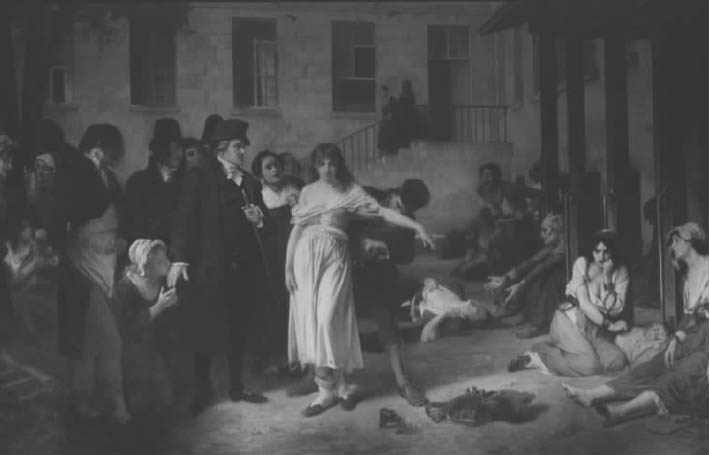

对我们而言，“疯癫”和“精神病”同义。我们也清楚，那些不停向陌生人骂脏话且不能自已的人，或认为自己的牙缝填补剂能够接受冥王星发来的无线电信号的人，并不一直都被视为有病。人们曾说他们神灵附体，鬼怪上身，或者就是一种亚人类的动物。但我们认为，对疯癫所持的其他观点如果不是恶意的，那就是无知的体现；在现代人发现疯癫是精神疾病后，疯癫者再也得不到任何对其智性的尊重了。
标准的精神病史把这种观点奉为经典。在法国革命期间，菲利普·皮内尔反对把疯人像动物一样戴上锁链，他去了庇塞特的疯人院释放他们。在那里，他遭遇了共和政府的狂热分子库通的反对。福柯引用了这件轶事，明显带有讽刺的语气：
（引自《疯癫与文明》，第242页）
此外还有关于塞缪尔·图克的类似故事，图克在与此同一时期的英国建立了贵格教会的精神病院（“疗养所”）。这些故事都把主角描述为勇敢且富有同情心的人，对于启蒙思想下显出的这种疾病，他们拒绝迷信说法，更愿意采纳有科学依据的处理方式。但是，福柯坚持认为，“真相与此相去甚远”（《疯癫与文明》，第243页）。
例如，图克的行为就有其宗教和伦理的动机，而不是为了科学。“疗养所”把疯人从锁链的束缚和肉体的虐待中解放出来，把他们置于宁静的环境中。但在这里，他们的任何偏离规范的行为都受到了严格的监控。这种治疗方法就是让疯人“觉得自己对自己身上任何可能影响伦理和干预社会之处都有道德上的责任，并且只有自己有责任”（《疯癫与文明》，第246页）。结论是，“图克创建了一种疯人院，在此，让责任压得喘不过气来的痛苦替代了对疯狂的肆意恐怖”（《疯癫与文明》，第247页）。
图克治疗法的典型例子就是其著名的“茶会”，即“按英国礼仪进行的社交活动”——福柯如是说。在这里，疯人是“疗养所”主管及员工的客人，他们（此处福柯引用了图克的原话）“相互竞争，看谁更礼貌、更得体”。了不起的是，“傍晚通常在极其和谐、快乐的气氛中度过……其情形既有点奇怪，又让人觉得情感上很愉悦”（《疯癫与文明》，第249页）。但是，福柯对这些场景有着完全不同的解读：“疯人不得不在理智凝视的双眼中把自己对象化为完美的陌生人，也就是说，成为一个抑制自身陌生因素不使其表现出来的人。理性之城只在他们满足了此项要求并且自愿接受无名无姓的前提下欢迎他们。”（《疯癫与文明》，第249-250页）

图10 《皮内尔解放疯人》（1876），托尼·罗伯特-弗勒里油画作品
福柯抵制把图克和皮内尔描述为人道主义者的形象，因为他拒斥他们所持有的“人性”蕴涵了现代资产阶级社会价值观的观点：“现在，疯人院必须再现社会道德的伟大延续。有关家庭和工作的价值观、所有被认可的美德现已主导疯人院”（《疯癫与文明》，第257页），福柯坚称，疯人院“不是观察、诊断与治疗的自由王国，而是人受到控告、审理、定罪的审判场所”。疯癫者在此脱去了锁链，却又被“囚禁于道德世界”（《疯癫与文明》，第269页）。这里存在着“强有力的道德禁锢”，福柯讥讽道，“我们已经习惯称之为——无疑是相反意义上的——疯人的解放”（《疯癫与文明》，第278页）。
从福柯的讽刺中，我们完全可以看出某种不切实际却又弥足珍贵的东西。不管怎么说，疯人不是某一特定社会或道德体系的反叛者；他们在任何有意义的人类语境中都表现得极不正常。如果图克的茶会有助于控制本会见谁杀谁的精神病患者，那么，为什么要担心这样的茶会强化了资产阶级的伦理观？
福柯曾与疯人打过交道，应该知道精神病患者通常只是一个精神病患者，他本来一定会欢迎一种治疗方法，让患妄想症的杀人犯重回传统道德。然而，福柯的愤怒对准的是这样一种疯癫观，它不承认我们合乎常规的标准之外还存在任何有意义的其他做法，并将所有明显偏离这些标准的观点和行为界定为越出正轨。在福柯看来，疯癫作为一种普遍的现象应该被看做对常规状态的有价值的挑战，尽管疯狂有时会带来恐惧，面对这种恐惧时常规状态能让人感到宽心。
但从福柯的角度出发所作的这一反应假定，疯癫除了偏离正轨之外可能也具有某种意义。这真的可能吗？福柯说，如果我们不这样认为，那是因为从历史的角度来看，我们的文化看待疯癫的方式在起作用。他的《疯癫史》就反复论证了这一结论。
他首先对中世纪和文艺复兴时期的疯癫作了一个粗略但关键的回望。然后，他认为，那时的疯癫被看做人类不可或缺的现象。疯癫与理性相对，但作为人类存在的另一类模式，它不是对理性的简单拒斥。因此，疯癫（即使遭到蔑视与憎恨）是对理性的有意义的挑战。它能与理性进行具有讽刺意味的对话（如伊拉斯谟的《愚人颂》），或者占据人类经验与真知的某一不为理性所知的领域（正如博斯的画作或者莎士比亚的悲剧）。不管在何种情况下，关键之处都是：在我们的文化对人类可能性的认识中，疯癫曾在历史上起到了举足轻重的作用。
这种对疯癫的有价值的认识终止于17世纪中期左右，那也是法国人所称的古典时代的肇始期。与中世纪和文艺复兴时期的观点相左，古典时代把疯癫看做对人类理性特征的单纯否定。疯癫被当做非理性（déraison），完全陷入了没有人类意义的动物性之中。相应的，疯人就在观念上被排除 在人类世界之外。因此，比方说，笛卡尔在《第一哲学沉思集》中把一系列的可能性作为怀疑自身想法的理由：感观可能具有欺骗性；他可能在做梦；甚至有可能有一位无所不能的恶魔专门在每一关键时刻欺骗他。但是福柯声称（《古典时代疯狂史》，第56-58页），有一种可能性让笛卡尔犹豫不前。笛卡尔曾暗示说，他的想法可能不可靠，因为他很像那些自认为是南瓜脑袋或玻璃脑袋的人；但他此后立即否决了这一可能性：“但他们是疯子，如果我有时认为自己像他们，那么我自己也疯了。”（《第一哲学沉思集》）（福柯和雅克·德里达曾就这段话的阐释产生过激烈的争辩。）
与从观念上把疯人排除在外的做法相关的是形体上的排斥，即通过把疯人关入疯人院，让其与常人的生活隔离开来。这一点在法国1656年的“大禁闭”中得到最为明显的展现。当时，短短数月之内，巴黎超过1%的人口被迫住进了“总医院”分散在各处的分部中。（其中的一个分部是萨彼里埃，现在已经成为一家现代化的医院；最最讽刺的是，1984年福柯自己就死在这里。）但是福柯强调，类似的禁闭行为在整个欧洲到处都有。
在观念与形体上把疯人排除在外也表达了一种道德上的谴责。然而，这不是普通的道德缺陷，比如人类社会的成员违背了某条基本的道德规范。疯癫是激进地选择了完全拒斥人性和人类社会、选择了一种纯粹（非人性的）动物性的生活。以古典主义的观点看来，疯子的动物性在其受控于激情这一现象中得到体现，激情的操控使得他们精神错乱，误把虚幻当成现实。激情式的谵妄将疯人与理智之光隔开，让其陷入根本性的盲目之中。
现代对疯癫的治疗观与古典主义的观点大相径庭，福柯后来把两者的巨大差别称为知识或话语结构的转变。疯人回归了人类社会，不再是人类界限以外的动物。但是，在这一社会中，疯人现在成为违反道德的人（触犯了特定社会规范的人），他们应为自身的病态怀有负罪感，应觉得需要改变自身的态度和行为。相应的，现代典型的治疗疯人的模式是不仅孤立他们，而且让他们接受道德化疗法。而且，从古典时代监护性的囚禁到现代治疗性的精神病院，这种转变依然拒绝把疯癫看做一种对人类的重大挑战。
现代精神病学在伦理上已公开宣称是中立的，它们治疗的病症并非病人之过，所以有人因皮内尔和图克的明确道德取向而否认他们作为现代精神病学之父的地位，而我们可能会反对这种看法。在早期的道德疗法和后期对疯癫的医学化疗法之间确实存在着显著差别吗？福柯的回应是，精神病院中道德主宰地位的最显著特征是“把医务人员奉若神明”（《疯癫与文明》，第269页）。我们相信疯人只不过是“精神上生病了”，因此认为医生不可避免地应该掌控对他们的治疗。但是福柯宣称，精神病院的规则从来都不是医疗性质的，而是掌握在道德权威手中。医生具有权威，并不是因为他们掌握了治疗疾病的知识（这最多不过是巧合），而是因为他们代表了社会的道德要求。这一点在当今的精神病治疗中十分显著。它徒具医学的外表，但治疗的核心依然是治疗师个人的道德权威，治疗师是体现社会价值的工具。由此，他扮演着如精神分析治疗中的移情那样的核心角色。
只要我们坚持把疯癫被认同为心理疾病的过程看做一个客观、科学的发现，那么福柯的说法就显得难以置信。然而，他所写的历史却暗示，与此相反，一旦摈弃了明确的道德疗法这一观念，把疯癫认同为精神疾病便只是精神病院中医生权威地位合法化的一种手段。医生在精神病院逐渐掌权这一事实最初跟他们的医疗专业水准关系不大。图克和皮内尔建议的道德疗法本质上并不是医学性质的，任何具有道德权威的人都可以实施这一治疗。然而，随着19世纪的展开，医学被客观的、价值无涉的知识这一观念所主宰，带有价值取向的道德疗法就没有了存在的空间。把疯癫作为一种明显的精神上的疾病，这一观点的引入主要是为了让医生对疯癫者的权威保持合理化，而不是因为它是科学真理或者在治疗上取得了成功。
然而，即使当代精神病学不符合它有时所宣称的科学的客观性，我们还是可能会问它是否真的无法实现与疯癫者之间有意义的互动。难道心理分析不是一个明显的反证，因为它使病人免受精神病院的局限且真正在倾听他们的声音？福柯认同以下观点：弗洛伊德去除了精神病院的大多数特征，仅保留了医生与病人的核心关系。但是，正如我们所看到的，这种关系是现代社会压制疯癫者的关键所在。而且，在福柯看来，弗洛伊德“放大了……医疗人员”的“仙术”，赋予其“半仙的地位”（《疯癫与文明》，第277页）。在分析师的身上，弗洛伊德“集中了……疯人院……所有的权力”（《疯癫与文明》，第277-278页）。分析师的确倾听病人的声音，但在病床之后却又悄无声息地把它转换为“绝对的观察事实 、纯粹且慎重的沉默 ，成为一个通过评判施以惩罚或奖赏的判官 ，其评判甚至不俯就语言”。结果是，心理分析法“未曾也不会听到非理性的声音”。它在某些病例中是有效的，但最终“仍旧是非理性王国的陌生人”（《疯癫与文明》，第278页）。
但是，如果疯癫已遭禁音，福柯又怎么会对疯癫的声音着迷——他显然对此如此入迷？原因可追溯到18世纪末以来疯癫自我展示的唯一方式：“在诸如荷尔德林、内瓦尔、尼采、阿尔托等人作品的惊雷闪电之中”（《疯癫与文明》，第278页），他们都是前两个世纪伟大的疯人艺术家。我们早就注意到疯人艺术家的主题与福柯对先锋派艺术的兴趣之间存在关联。在两种情况下，他都认为对理性极限的探索将会展现从理智的途径无法企及的真理。
这一思想映射了《疯癫史》中普遍存在的张力，这一张力尤其在该书的开头与结尾处得以爆发出来。在序言（第二版没有收录）和结论中，福柯暗示他所写的是主观属格而非客观属格意义上的“疯癫”史；换言之，他在某种意义上是从疯人自身的立场来写作的，而不仅仅是展示神智正常者感受到的疯人。事实上，序言和结论之间的六百页几乎完全是在讨论后一种感知。但是，我们不应该让这种量上的不平衡掩盖了“自在的疯癫”是该书的核心论述这一事实。
福柯坚持这一论述是因为，他在这一阶段正以写作来反对启蒙运动。与霍克海默和阿多诺（在他们约二十年前所写的《启蒙辩证法》中）一样，他意识到本欲用来解放我们的理性本身也成为主宰我们的主要工具。他所用的修辞极具讽刺意味，是对理性之虚伪性的最直接的攻击；他把疯人作为主角，其目的就是要创建理性体系的替代形式。这一替代形式就是疯人所经历的、疯人艺术家的作品所表现出的非理性的越界经验。
这一研究动向的问题是“经验”的不足，而经验正是它的立论之处。正如福柯自己在《知识考古学》开篇的简短自我批评中所说，“通常来说，（《疯癫史》）赋予了我所谓的‘经验’太高、太神秘的地位，由此显示在多大程度上我们倾向于承认存在一个匿名但普遍的经验主体”（《知识考古学》，第16页）。在笔者看来——我也不必佯装这就是福柯心中所想——这一不足至少具有三层含义。首先，这里有康德哲学的核心真理：经验，仅仅就是经验，必须遭遇作为世界的一部分且具有特定可理解性的某一对象。因此，如果一个经验不具有观念结构所赋予的特征，它就没有连贯的意义——观念结构界定理性的范围进而确定理智的规范。其次，所谓疯人所经历的经验可能是一个不具历史维度的常量，从一个时期到另一个时期保持不变地流传下来，不受那些改变人类世界的力量的影响。福柯强烈的历史意识不容许出现这样一种自治的经验。最后，即使这样的经验是可能的——这与前两点相反——它在根本上无固定形态、纯属越界的本质，也使其完全不足以成为有效反对统治机制的特定政治行动所需的基础。成功的行动需要明确的计划，这样的计划不可能立足于疯癫的松散爆发上。革命需要严格控制下的破坏行动，而不是无规则的惊雷闪电。
福柯也许从未完全从对这一非理性经验的痴迷中解放出来。但他最终认识到，这并不是对启蒙运动之理性的有意义的替代。这一思想在他拒绝“启蒙运动的敲诈”中表现出来［“什么是启蒙？”，《福柯主要作品集》（卷三），第312页］，他将其理解为是在坚持“每人必须要么‘赞成’、要么‘反对’启蒙运动”［《福柯主要作品集》（卷三），第313页］。此处他已看出“启蒙运动”是“一系列的政治、经济、社会、机构和文化事件，我们在很大程度上仍旧依赖于它”，因而它“构成了我们分析中的例外领域”［《福柯主要作品集》（卷三），第312页］。从这一视角看，启蒙运动就像我们呼吸的空气——它是我们存在的内在组成部分，离我们太近因而无法成为我们的选择对象，不管是赞成还是反对的对象。相反，我们能够也必须通过“一系列尽可能准确的历史探究”［《福柯主要作品集》（卷三），第313页］与它互动。理性是我们自身的一部分，尽管对这一部分需要不断进行分析与评判。但是，我们也没有必要全面挑战理性，就像福柯在《疯癫史》中所预见的那样。
疯癫者的“声音”这一浪漫想法还能在我们与理性的抗争中占有一席之地，但仅仅作为一种笼统的提示：我们永不应该满足于现在对理性的运用。正如真理的观念被用于警示我们，即使“完全被证实的”主张可能最终也是错误的，疯癫这一观念同样也能提醒我们，目前被视为合理的有可能某一天会被证实为非理性的。然而，对于后期的福柯而言，这种十分笼统的警示在我们与理性的斗争中并没有特别大的意义，因为启蒙运动使理性成为我们历史命运的一部分。
前一章提及的讨论康吉兰的文章中，福柯提出了一个新的概念，这一概念提供了疯人经验所缺乏的具体性。这一概念即“错误”，它被认为是对我们认识背景中的规范的特定偏离。尽管“错误”通常被认为是完全负面的——作为追求真理的失败，但福柯指出，这种负面意义只是相对于对现实的特定概念化而言。从一个更为开阔的视角来看，一种知识体系中的错误可能会是提出另一知识体系的开创性真理。例如，哥白尼的地球绕太阳旋转的思想在亚里士多德和托勒密的天文学体系中就是完全负面意义上的错误，但它成为了17世纪新天文学体系的基石。从这种意义来看，知识本身必须被理解为错误的一种形式。
这种把知识看做错误的观念是一个与福柯早期对疯人越界经验（更宽泛地讲，先锋艺术）的领会旗鼓相当的具体且有效的思想。错误本身是一种越界，违反了我们的概念背景所设定的界限。它是疯癫之宇宙性闪电的局部化和世俗化版本。但是，错误在形而上层次的欠缺在它的历史有效性中得到了充分的补偿。正是因为错误代表了对特定规范的特定偏离，而不是笼统地反对规范性这一观念，它对我们所处的世界才施行了实际的改变，而没有从美学意义中逃离。最终，福柯使疯癫的狂喜从属于（创造性）错误的反讽式满足。